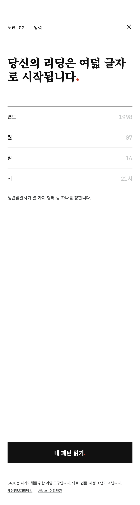
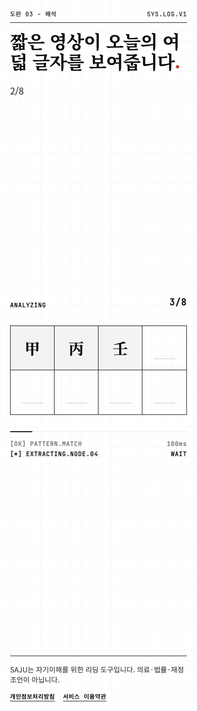
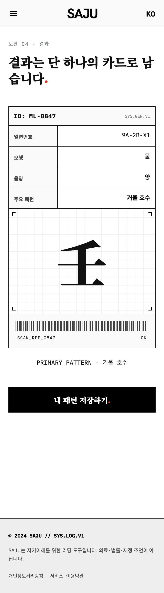
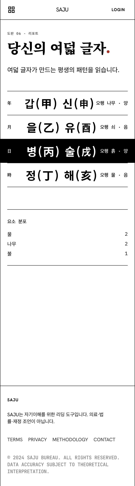
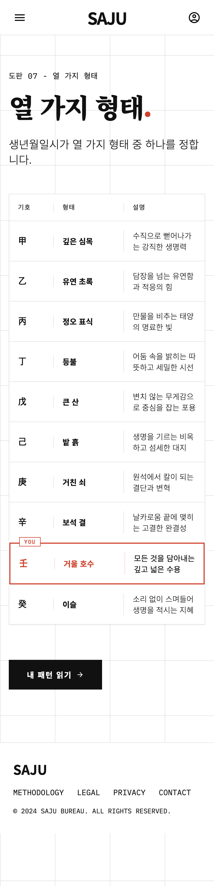
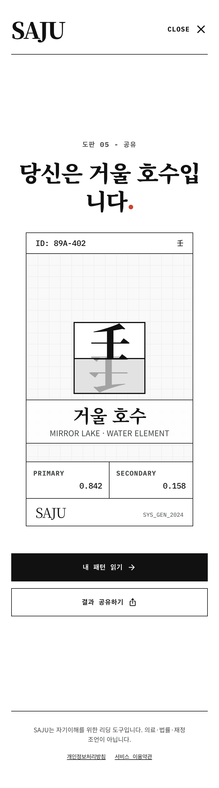

랜딩(k01)에 이어 입력 → 해석 → 결과 → 리포트 → 형태 도감 → 공유 사용자 여정 6화면. 확정 컨셉 스위스 데이터-에디토리얼 (순백+잉크+레드 마침표, 도판 체계, 모노 데이터 라벨). 카피덱 v2-KO · 390px@2x 네이티브 렌더 · CI 브랜드 법 eval 통과.

생년월일시 4요소를 표 형식으로 입력. 열 가지 형태 안내 + CTA '내 패턴 읽기'.

여덟 글자 슬롯이 순차 채워지는 진행. 모노 상태 라벨로 분석 진행 표시.

PATTERN_CARD 전체 뷰 — 일련번호 · 오행 · 음양 · 주요 패턴 + 대형 한자 + 바코드.

여덟 글자 분해(년월일시 · 천간지지 · 음양 · 오행) + 오행 구성 표.

10행 레지스트리 표(甲~癸) + 내 형태 壬 거울 호수 YOU 하이라이트.

공유 최적화 단일 카드 + '내 패턴 읽기' 진입 CTA.